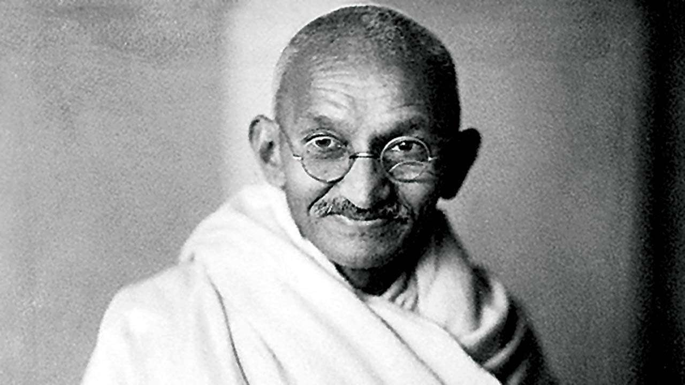

Mahatma Gandhi

Mahatma Gandhi employed nonviolent resistance to lead India's independence movement from British rule, and in turn inspired movements for civil rights and freedom across the world.
Brief Chronology
| Date | Year | Details |
|---|---|---|
| 2 October | 1869 | Birth of Mohandas Karamchand Gandhi |
| 10 June | 1891 | Gandhi passes the bar exam in England. |
| April | 1893 | Gandhi accepts commission to spend a year in South Africa advising on a lawsuit. |
| October | 1899 | Outbreak of Boer War (1899-1901) in South Africa. Gandhi organizes an ambulance corps for the British. |
| 6 April | 1919 | Nationalists hold a hartal, or day of fasting and prayer, in protest of the Rowlatt Act, which drastically curtails civil liberties in India. |
| October | 1899 | Gandhi publishes the Declaration of Independence of India. |
| ~ | 1935 | Government of India Act passes British Parliament and is implemented in India; it is the first movement toward independence. |
| 10 February ~ 2 March | 1943 | Gandhi fasts while imprisoned, to protest British rule. |
| 15 August | 1947 | Indian independence becomes official, as does the partition into two countries, India and Pakistan. |
| 30 January | 1948 | Gandhi is assassinated by Nathuram Vinayuk Godse, a Hindu nationalist. |
An eye for eye only ends up making the whole world blind.